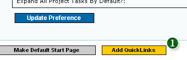
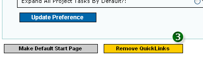

Quicklinks will 'remember' your favourite pages in the system by adding it to the Quicklinks Menu on your left. Quiclinks feature is activated by default. For every page that supports Quicklinks, click the “Add Quicklinks” button as per the figure below and the menu on your left will be automatically updated.

Figure 1: Add Quicklinks By Clicking the "Add Quicklinks" Button
- 1. CLICK TO ADD QUICKLINKS
|
After the button is clicked, you can then verify the availability of the page at the left hand Quicklinks menu
 Figure 2: Selected Page Added to the Quicklinks Menu on the Left
Figure 2: Selected Page Added to the Quicklinks Menu on the Left
- 2. VERIFY QUICKLINKS ADDED IN QUICKLINKS MENU
|
To remove the Quicklinks selection, simple click the same button again or remove it from the “Quicklinks List” tab in this page.

Figure 3: Removing Quicklinks From The Menu
- 3. CLICK TO REMOVE QUICKLINKS
|